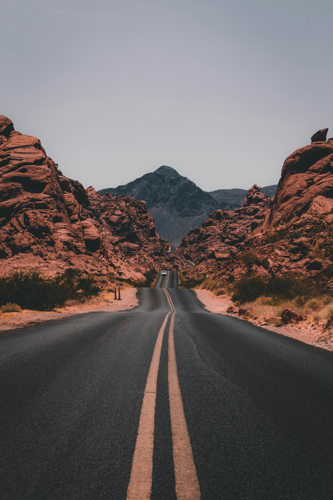
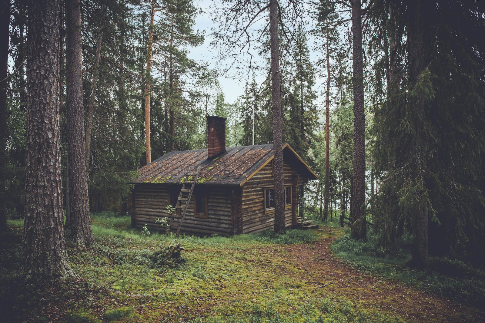
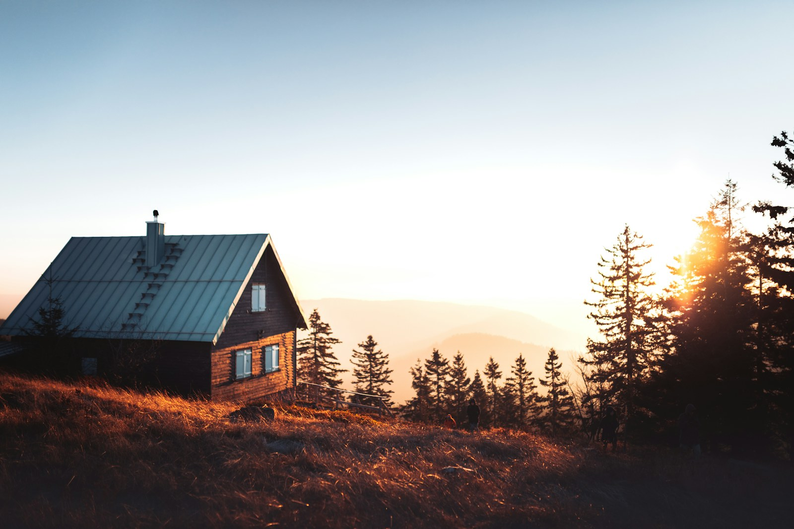

Ótima localização
Um cenário tranquilo em meio à natureza.
Reserve seu chalé e embarque em uma jornada de conforto e tranquilidade.
Faça sua ReservaUm cenário tranquilo em meio à natureza.
Espaços para descansar e aproveitar cada momento.
Ambientes para celebrar com as pessoas especiais.
Lugares para encontros e experiências ao ar livre.
Natureza, tranquilidade e encontros especiais. Um modelo de site para apresentar uma hospedagem e espaço de eventos.
Saiba mais




